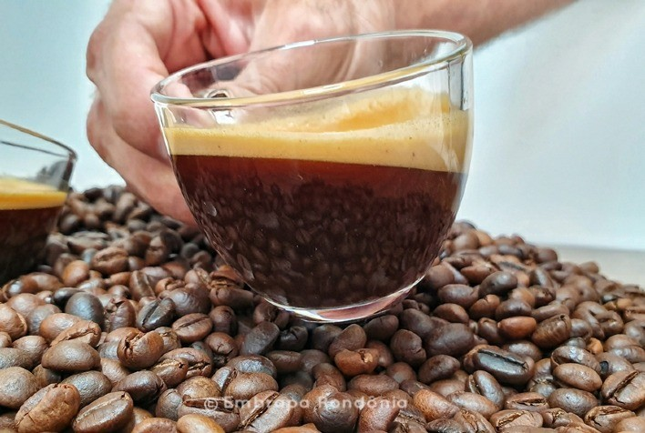
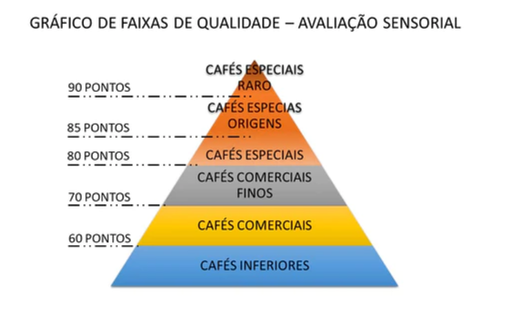
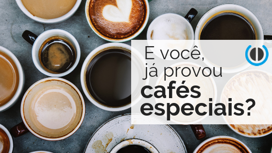

Café especial, uma viagem sem volta
Bom, o café é uma bebida que tem muita história pra contar, não é? Boas, e outras nem tanto... Afinal, o café é responsável por parte da colonização e o desenvolvimento de muitos países tropicais. Aqui, vamos ficar com as boas. Nesse longo tempo, essa bebida preta foi passando por muitas mudanças e hoje é consumida em larga escala em todo o planeta.
a “ABIC” - Associação Brasileira das Indústria de Café com o intuito de padronizar os cafés torrados brasileiros criou um protocolo privado, chamado “Selo ABIC”.
Assim, por meio de três selos gradativos, Tradicional, Superior e Gourmet, procuram garantir três níveis de qualidade. E partem do princípio que haja apenas café dentro do pacote, um selo de pureza. Poxa, mas isso não é o básico? Pois é...
O famoso termo “café especial”, é o nome dado para uma categoria de cafés que possui uma graduação a partir de 80 pontos numa escala de 0 a 100 de avaliação sensorial da Metodologia SCA. A classificação do “Speciality coffee” é feita através de um degustador certificado de café, o Q Grader. Esse nome esquisito é dado para todo profissional treinado e aprovado pela organização.
Quem é a SCAA?
A Specialty Coffee Association (SCA) é uma associação comercial construída sobre os critério da livre informação, inclusão e o poder do conhecimento compartilhado. O objetivo da SCA é estimular as comunidades cafeeiras globais a apoiar atividades que tornem o café mais sustentável, equitativo e próspero para toda a cadeia de valor. De cafeicultores a baristas e torrefadores, nossos membros se estendem por todo o mundo, abrangendo todos os elementos da cadeia de valor do café.
A SCA atua como uma força unificadora dentro da indústria de cafés especiais e trabalha para tornar o café melhor, elevando os padrões em todo o mundo por meio de uma abordagem colaborativa e progressiva. Dedicado a construir uma indústria que seja justa, sustentável e estimulante para todos, o SCA se baseia em anos de conhecimento e pura inspiração da comunidade de cafés especiais.
Mas devido a toda produção e conceito do café especial ser muito amplo, foi necessário criar uma metodologia que pudesse avaliar de forma sensorial e objetiva o café. E inclusive essa metodologia chamada de SCA Cupping Method garante a capacidade de poder avaliar com mais precisão a qualidade do produto.
Essa metodologia consiste em uma planilha, onde são listados 10 atributos para avaliação do café, sendo pontuados de 0 a 10. Baseado em conceitos científicos, é possível quantificar todos os elementos que fazem parte do processo. O produto que atingir o mínimo de 80 de 100 pontos, passa a ser considerado através deste método um café especial.
Café especial: Qual sua diferença em relação ao tradicional?
Antes de entrar neste tópico, por tudo que foi citado anteriormente você concorda que são diversos itens avaliados na degustação de um café e mais ainda, como isso realmente é levado a sério para aqueles que o comercializam.
No dia que você puder provar um café especial que passou com louvor em todos os testes citados, você nunca mais vai querer o famoso cafezinho tradicional. Neste tópico, vamos explicar as diferenças entre ambos. Vamos lá?
Atualmente nosso país consegue produzir 50 milhões de sacas de café que são divididos entre os grãos arábica e conilon. O café arábica é normalmente mais doce, ácido enquanto o robusta (conillon) é menos complexo.
Mas isso é sempre assim? Não! Podem existir bons cafés robusta, mas ainda poucos. Podemos dizer que um café 100% arábica é especial? Não! Não há relação com a espécie ou variedade, ou seja os parâmetros são sensoriais. Como vamos falar no tópico mais abaixo.
Agora, tem uma coisa pra nós do URBE muito importante. Café especial vai muito além de uma boa xícara de café. O café especial é bem cuidado, cada lote é conhecido, colhido da melhor forma, registrado e, portanto, tem uma história de produção.
O local, a adubação, o clima, quase tudo interfere nesse sabor final. Em seguida, cada lote é provado e cria-se uma enorme expectativa de como cada lote de café vai se apresentar e com quais parâmetros.
E nós, garimpeiros destes cafés de qualidade, estamos atrás deste relacionamento, destas histórias, de como cada lote foi produzido e contato pelo próprio produtor. E, claro, soma-se a isso a tradição, o aconchego de uma xícara de café, isso não pode mudar. Esse é o padrão URBE de qualidade.
Fragrância e Aroma
Fragrância, é o cheirinho do café quando moído e ainda seco.
Aroma, quando o café recebe a água em infusão. Serve para perceber as substâncias voláteis, ou seja, o aroma que sobe ao molhar o café. Assim como a fragrância, precisa ser agradável, não podem ser cheiros desagradáveis ou repugnantes, que lembram, por exemplo, químicos, medicinais ou sintéticos, como borracha.
Sabor
Aqui é avaliado as primeiras impressões do gosto da bebida, é considerado uma das etapas mais importantes para os cafés. É da avaliação de sabor que são identificadas as notas sensoriais do café, como mel, mascavo, cana, frutado, floral, geleia, chocolate, caramelo e por aí vai.
Doçura
O café especial possui frutose, que é basicamente açúcar do fruto. Quando torramos demais a gente perde a doçura, quando torramos na quantidade certa, conseguimos caramelizar a frutose dando uma doçura agradável e presente na boca.
Manter a doçura do fruto após a secagem e a torra é um fator determinante para a pontuação do café especial.
Corpo
Aqui é avaliado a sensação tátil deixada na língua e no céu da boca, de peso, viscosidade e consistência quando bebemos café. Bebidas com corpo marcante recebem nota 10 nesse item. Para perceber essa experiência de forma simples e didática, prove dois copos d’água, sendo um deles adoçado. Você irá notar facilmente as diferenças na língua.
Acidez
Uma parte importante para o café especial e que deve ser notado pela sensação deixada na lateral da língua, a acidez é responsável pela vivacidade, frescor e brilho sensorial. O brasileiro muitas vezes tem uma percepção ruim da acidez, como algo errado, um defeito. Mas procure pensar na acidez cítrica das frutas.
Equilíbrio
A forma como todos os itens anteriores se complementam dentro da boca e também contrastam um com o outro. Aqui o que importa é a harmonia entre os eles, se há algum em excesso, em caso negativo para um e positivo para outro a pontuação é reduzida.
Uniformidade
É avaliado a uniformidade da bebida em mais de um copo, se algum mostrar alguma variação a pontuação automaticamente diminui.
Finalização
Refere-se ao gosto que o café deixa no paladar após sua ingestão, para uma boa qualidade o sabor deixado deve ser agradável. Caso contrário, a pontuação será baixa.
Defeitos
Aqui são avaliados os defeitos que podem aparecer na preparação e degustação da bebida, se tiver um sabor alto de fermentação indesejada ou sabor com muita adstringência, como sabor verde ardido de banana verde, por exemplo. Isso contribui de forma negativa em sua pontuação para um café especial.
Avaliação Final
Este é um atributo subjetivo. Trata-se da avaliação final e sintetizada de todos os atributos pela visão individual do degustador.
Uma amostra bem avaliada, mas que apresente disparidades, pode receber um valor menor do que uma que demonstre perfeitamente suas características, originalidade e qualidade e que certamente será melhor pontuada.

Comentários
Amei o conteúdo e já me inscrevi para receber no e-mail as atualizações! :)
Fiquei sabendo que em alguns dias vou poder comprar um café especial diretamente com vocês!! Já até me cadastrei!!
Esta análise sensorial está impecável, adorei!